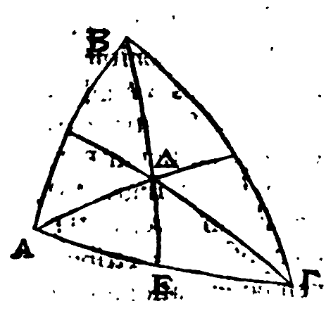

Proposition III.9 — De Concursu Bisectorum (Latin)¶
Menelai Alexandrini Sphaericorum Lib. III Prop. IX. Theor. (Halley 1758, p. 95)


Prop. IX. Theor. (Halley 1758, p. 95)¶
Enuntiatio & Corollarium (Halley 1758, p. 95)
Si duo quilibet anguli trianguli Sphaerici ductis arcubus dividantur bifariam, & è puncto concursus duorum arcuum ducatur arcus tertius ad angulum reliquum: dividet ille arcus angulum reliquum bifariam. Coroll. Omni igitur Triangulo Sphaerico inscribi potest circulus.
[§4.3 · Demonstratio, p. 95] Trianguli Sphaerici ΑΒΓ dividantur duo anguli qui ad Α & Γ bifariam, ductis arcubus ΑΔ, ΔΓ coeuntibus ad Δ; & jungantur puncta Β, Δ, ducto arcu ΒΔ: dico arcum ΒΔ bisecare angulum ΑΒΓ.
Producatur arcus ΒΔ ad Ε: & quoniam anguli qui sunt ad Α & Γ dividuntur bifariam ab arcubus ΑΔ, ΔΓ, erit (per 6m III hujus) sinus arcus ΒΔ ad sinum arcus ΔΕ sicut sinus arcus ΒΓ ad sinum arcus ΓΕ, & sicut sinus arcus ΑΒ ad sinum arcus ΑΕ: permutando itaque sinus arcus ΒΓ erit ad sinum arcus ΑΒ sicut sinus arcus ΓΕ ad sinum arcus ΑΕ. Erit igitur (è converso ejusdem 6tae) angulus ΑΒΓ bifariam divisus ab arcu ΒΔ. Q. E. D.